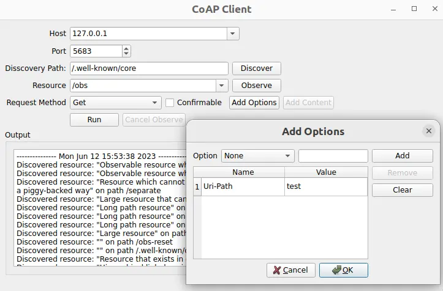

Simple CoAP Client demonstrates how to create a minimalistic CoAP client application to send and receive CoAP messages.
Running the Example
To run the example from Qt Creator, open the Welcome mode and select the example from Examples. For more information, see Qt Creator: Tutorial: Build and run.
Setting Up a CoAP Server
To use the application, you need to specify a CoAP server. You have the following options:
- Use the CoAP test server located at
coap://coap.me. - Create a CoAP server using libcoap, FreeCoAP or any other CoAP server implementation.
- Use the Californium plugtest server, which supports most of the CoAP features. You can build it manually or use a ready Docker image, which builds and starts the plugtest server. The steps for using the docker-based server are described below.
Using the Docker-based Test Server
The following command pulls the docker container for the CoAP server from the Docker Hub and starts it:
docker run --name coap-test-server -d --rm -p 5683:5683/udp -p 5684:5684/udp tqtc/coap-californium-test-server:3.8.0
To find out the IP address of the docker container, first retrieve the container ID by running docker ps, which will output something like:
$ docker ps
CONTAINER ID IMAGE
5e46502df88f tqtc/coap-californium-test-server:3.8.0
Then you can obtain the IP address with the following command:
docker inspect <container_id> | grep IPAddress
For example:
$ docker inspect 5e46502df88f | grep IPAddress
...
"IPAddress": "172.17.0.2",
...
The CoAP test server will be reachable by the retrieved IP address on ports 5683 (non-secure) and 5684 (secure).
To terminate the docker container after usage, use the following command:
docker stop <container_id>
The <container_id> here is the same as retrieved by the docker ps command.
Creating a Client
The first step is to create a CoAP client using the QCoapClient class. Then we need to connect its signals, to get notified when a CoAP reply is received or a request has failed:
MainWindow::MainWindow(QWidget *parent) :
QMainWindow(parent),
ui(new Ui::MainWindow)
{
m_client = new QCoapClient(QtCoap::SecurityMode::NoSecurity, this);
connect(m_client, &QCoapClient::finished, this, &MainWindow::onFinished);
connect(m_client, &QCoapClient::error, this, &MainWindow::onError);
...
Sending Requests
We use the QCoapRequest class to create CoAP requests. This class provides methods for constructing CoAP frames.
void MainWindow::on_runButton_clicked()
{
const auto msgType = ui->msgTypeCheckBox->isChecked() ? QCoapMessage::Type::Confirmable
: QCoapMessage::Type::NonConfirmable;
QUrl url;
url.setHost(tryToResolveHostName(ui->hostComboBox->currentText()));
url.setPort(ui->portSpinBox->value());
url.setPath(ui->resourceComboBox->currentText());
QCoapRequest request(url, msgType);
for (const auto &option : std::as_const(m_options))
request.addOption(option);
...
In this example, we set the URL, as well as the message type and add options to the request. It is also possible to set the payload, message ID, token, and so on, but we are using the default values here. Note that by default, the message ID and token are generated randomly.
Based on the selected request method, we send a GET, PUT, POST or DELETE request to the server:
...
switch (method) {
case QtCoap::Method::Get:
m_client->get(request);
break;
case QtCoap::Method::Put:
m_client->put(request, m_currentData);
break;
case QtCoap::Method::Post:
m_client->post(request, m_currentData);
break;
case QtCoap::Method::Delete:
m_client->deleteResource(request);
break;
default:
break;
}
...
For PUT and POST requests we also add m_currentData as a payload for the request.
For browsing the contents of the server and discovering the resources available on it, a discovery request is used:
void MainWindow::on_discoverButton_clicked()
{
...
QCoapResourceDiscoveryReply *discoverReply =
m_client->discover(url, ui->discoveryPathEdit->text());
if (discoverReply) {
connect(discoverReply, &QCoapResourceDiscoveryReply::discovered,
this, &MainWindow::onDiscovered);
...
If there are observable resources on the server (meaning that they have the resource type obs), we can subscribe to updates on that resource by running an observe request:
void MainWindow::on_observeButton_clicked()
{
...
QCoapReply *observeReply = m_client->observe(url);
...
connect(observeReply, &QCoapReply::notified, this, &MainWindow::onNotified);
...
The client can unsubscribe from the resource observation by handling the clicked() signal of the cancelObserveButton:
...
connect(ui->cancelObserveButton, &QPushButton::clicked, this, [this, url]() {
m_client->cancelObserve(url);
ui->cancelObserveButton->setEnabled(false);
});
The responses coming from the server are displayed in the UI:
void MainWindow::addMessage(const QString &message, bool isError)
{
const QString content = "--------------- %1 ---------------\n%2\n\n"_L1
.arg(QDateTime::currentDateTime().toString(), message);
ui->textEdit->setTextColor(isError ? Qt::red : Qt::black);
ui->textEdit->insertPlainText(content);
ui->textEdit->ensureCursorVisible();
}
void MainWindow::onFinished(QCoapReply *reply)
{
if (reply->errorReceived() == QtCoap::Error::Ok)
addMessage(reply->message().payload());
}
static QString errorMessage(QtCoap::Error errorCode)
{
const auto error = QMetaEnum::fromType<QtCoap::Error>().valueToKey(static_cast<int>(errorCode));
return MainWindow::tr("Request failed with error: %1\n").arg(error);
}
void MainWindow::onError(QCoapReply *reply, QtCoap::Error error)
{
const auto errorCode = reply ? reply->errorReceived() : error;
addMessage(errorMessage(errorCode), true);
}
void MainWindow::onDiscovered(QCoapResourceDiscoveryReply *reply, QList<QCoapResource> resources)
{
if (reply->errorReceived() != QtCoap::Error::Ok)
return;
QString message;
for (const auto &resource : std::as_const(resources)) {
ui->resourceComboBox->addItem(resource.path());
message += tr("Discovered resource: \"%1\" on path %2\n")
.arg(resource.title(), resource.path());
}
addMessage(message);
}
void MainWindow::onNotified(QCoapReply *reply, const QCoapMessage &message)
{
if (reply->errorReceived() == QtCoap::Error::Ok) {
addMessage(tr("Received observe notification with payload: %1")
.arg(QString::fromUtf8(message.payload())));
}
}
static QString tryToResolveHostName(const QString hostName)
{
const auto hostInfo = QHostInfo::fromName(hostName);
if (!hostInfo.addresses().empty())
return hostInfo.addresses().first().toString();
return hostName;
}